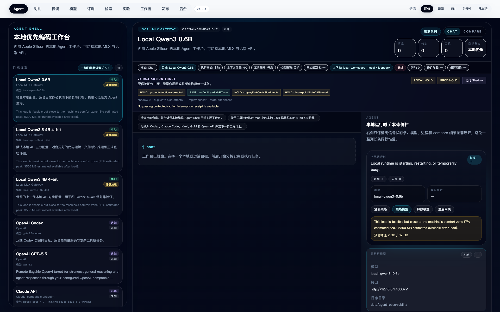
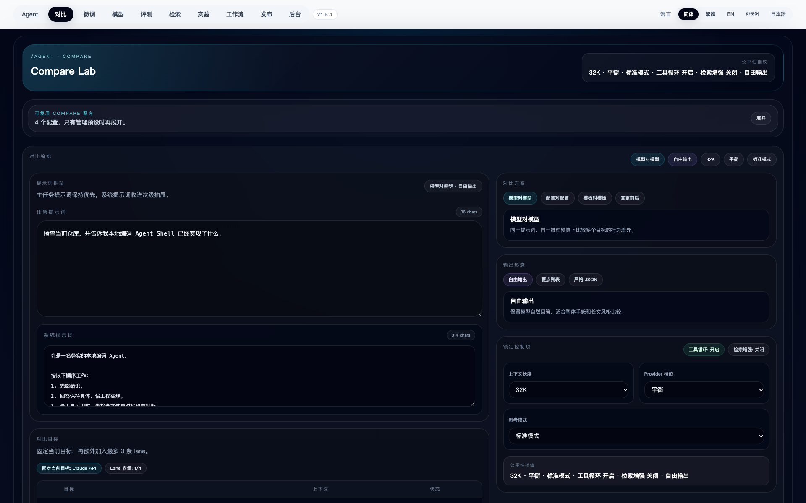
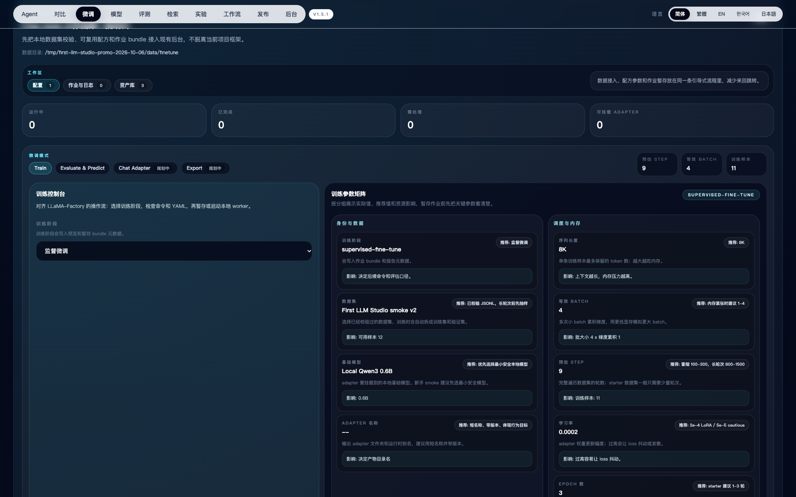
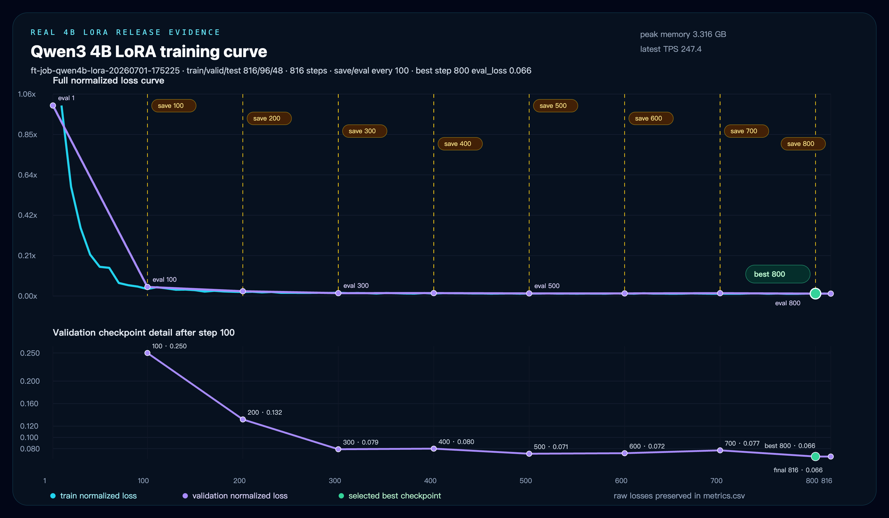
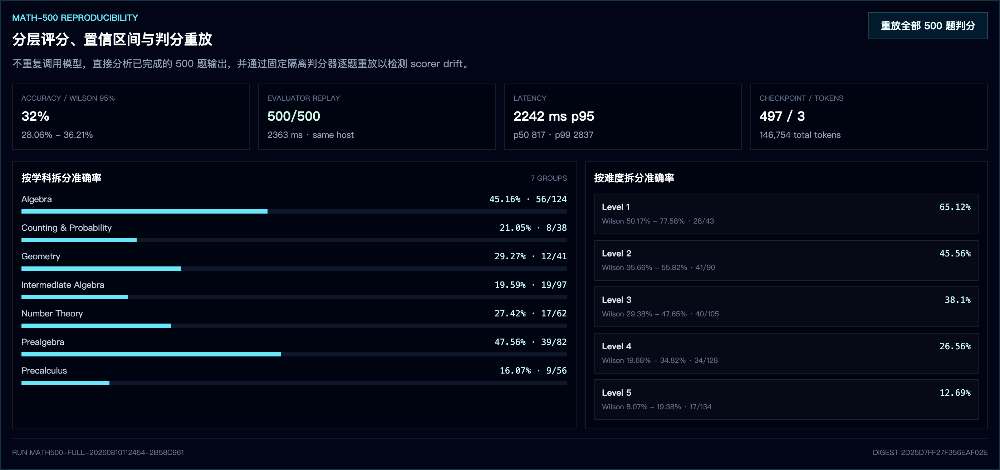
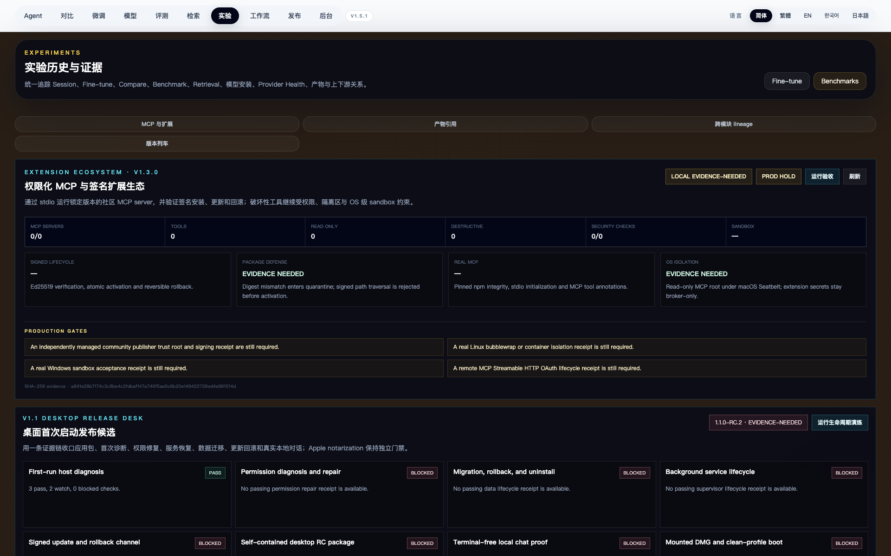

Agent · Compare · Fine-tune · Benchmark · Runtime
本地模型工作，从选择到验证，留在同一条可复查的工作流里。
Local MLX and remote targets in one workbench.
模型选择、会话与运行状态，随手可查。

Aligned prompts, target lanes and review handoff.
同一任务下看差异，再交给评测流程。

Recipes, jobs, reports and checkpoint evidence.
从本地配方到产物，保留训练来路。


Pinned protocol, scorer replay and result lineage.
把分数放回数据集、判分器和运行上下文。

Runs, artifacts and release gates stay connected.
实验记录串起操作与证据，未满足的门槛照样可见。

Open source · Local-first · Built for Apple Silicon
看得见过程，也看得清边界。
github.com/ChrisChen667788/Your-First-LLM-Studio